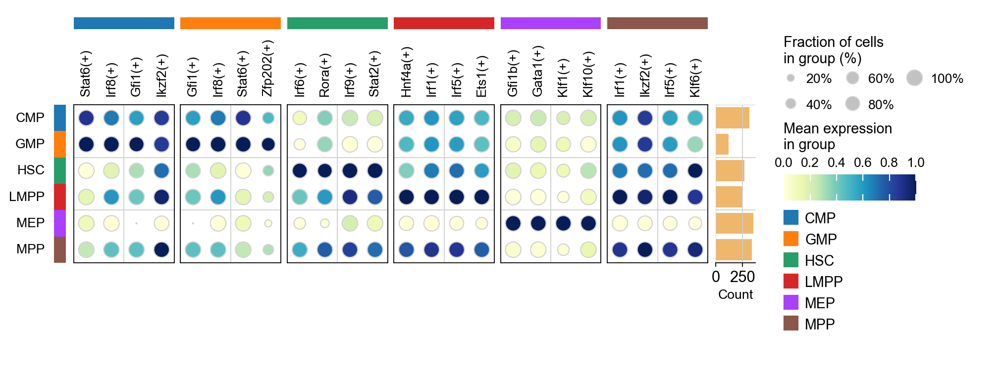
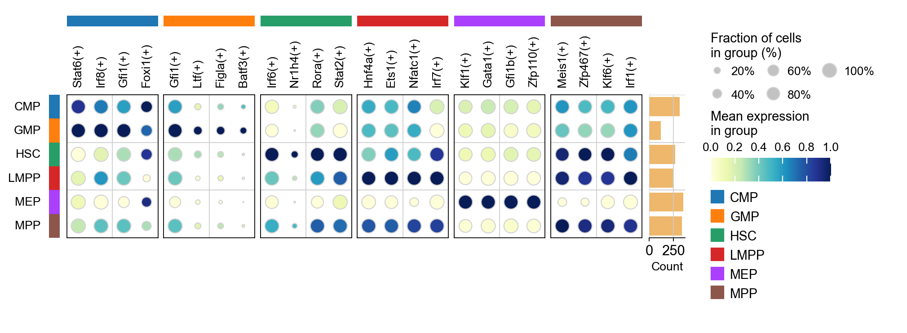

Gene Regulatory Network Analysis with SCENIC#
SCENIC (Single-Cell rEgulatory Network Inference and Clustering) is a powerful computational method for reconstructing gene regulatory networks (GRNs) from single-cell RNA-seq data. This tutorial will guide you through the complete SCENIC workflow using the enhanced implementation in OmicVerse.
Key Innovations in OmicVerse
We’ve made three major improvements to the original SCENIC implementation:
🚀 Speed Optimization: Analysis time reduced from 30 minutes-12 hours to just 5-10 minutes
🔧 Dependency Management: Resolved installation conflicts between
pySCENICandRegDiffusion🐛 Bug Fixes: Fixed common issues that could occur during the analysis
Citation
If you use this tutorial, please cite:
SCENIC: Van de Sande, B., et al. A scalable SCENIC workflow for single-cell gene regulatory network analysis. Nat Protoc 15, 2247–2276 (2020).
RegDiffusion: Zhu H, Slonim D. From Noise to Knowledge: Diffusion Probabilistic Model-Based Neural Inference of Gene Regulatory Networks. J Comput Biol 31(11):1087-1103 (2024).
Let’s begin!
# Import required packages and set up the environment
import scanpy as sc
import omicverse as ov
import numpy as np
import pandas as pd
# Set up plotting parameters
ov.plot_set(font_path='Arial')
# Enable auto-reload for development
%load_ext autoreload
%autoreload 2
🔬 Starting plot initialization...
Downloading Arial font from GitHub...
Arial font downloaded successfully to: /tmp/omicverse_arial.ttf
Registered as: Arial
🧬 Detecting CUDA devices…
✅ [GPU 0] Tesla V100-SXM2-16GB
• Total memory: 15.8 GB
• Compute capability: 7.0
____ _ _ __
/ __ \____ ___ (_)___| | / /__ _____________
/ / / / __ `__ \/ / ___/ | / / _ \/ ___/ ___/ _ \
/ /_/ / / / / / / / /__ | |/ / __/ / (__ ) __/
\____/_/ /_/ /_/_/\___/ |___/\___/_/ /____/\___/
🔖 Version: 1.7.2rc1 📚 Tutorials: https://omicverse.readthedocs.io/
✅ plot_set complete.
1. Data Preparation#
Loading the Dataset#
For this tutorial, we’ll use the mouse hematopoiesis dataset from Nestorowa et al. (2016, Blood). This dataset contains single-cell RNA-seq data from mouse hematopoietic stem and progenitor cells, making it ideal for studying regulatory networks in cell differentiation.
Dataset Information#
The dataset includes:
1,645 cells from mouse bone marrow
3,000 highly variable genes
Multiple cell types: HSCs, MPPs, LMPPs, GMPs, CMPs, and more
Pseudotime information for trajectory analysis
Pre-computed cell type annotations
Note 1: For your own data, you’ll need to perform these preprocessing steps before running SCENIC. The raw counts should be preserved in the
layers['raw_count']for optimal RegDiffusion performance.
Note 2: In the tutorial on the official website of SCENIC, the number of genes used is 3000 HVG + TF genes
# Load the mouse hematopoiesis dataset
adata = ov.single.mouse_hsc_nestorowa16()
# Display basic information about the dataset
print("Dataset shape:", adata.shape)
print("Cell types available:", adata.obs['cell_type_roughly'].unique())
Load mouse_hsc_nestorowa16_v0.h5ad
Dataset shape: (1645, 3000)
Cell types available: ['MPP', 'HSC', 'LMPP', 'GMP', 'CMP', 'MEP']
Categories (6, object): ['CMP', 'GMP', 'HSC', 'LMPP', 'MEP', 'MPP']
Required Database Files#
SCENIC requires species-specific reference databases for motif enrichment analysis. These files are essential for the regulon inference step.
Database Requirements#
For mouse analysis, you need to download the following files from the SCENIC resources:
Ranking Databases (
.featherfiles):mm10_500bp_up_100bp_down_full_tx_v10_clust.genes_vs_motifs.rankings.feathermm10_10kbp_up_10kbp_down_full_tx_v10_clust.genes_vs_motifs.rankings.feather
Motif Annotation File (
.tblfile):motifs-v10nr_clust-nr.mgi-m0.001-o0.0.tbl
Database Functions#
500bp upstream + 100bp downstream: Promoter regions analysis
10kbp upstream + 10kbp downstream: Distal regulatory elements
Motif annotations: Maps TF motifs to gene symbols
Download Instructions#
# Create directory for databases
mkdir -p /path/to/scenic/databases/mm10
mkdir -p /path/to/scenic/motif/mm10
# Download ranking databases
wget https://resources.aertslab.org/cistarget/databases/mus_musculus/mm10/refseq_r80/mc_v10_clust/gene_based/mm10_500bp_up_100bp_down_full_tx_v10_clust.genes_vs_motifs.rankings.feather
wget https://resources.aertslab.org/cistarget/databases/mus_musculus/mm10/refseq_r80/mc_v10_clust/gene_based/mm10_10kbp_up_10kbp_down_full_tx_v10_clust.genes_vs_motifs.rankings.feather
# Download motif annotations
wget https://resources.aertslab.org/cistarget/motif2tf/motifs-v10nr_clust-nr.mgi-m0.001-o0.0.tbl
For Other Species#
Human: Replace
mm10withhg38Drosophila: Use
dm6databasesFull list: Available at https://resources.aertslab.org/cistarget/
Important: These files are large (~1-2GB each) and required for the analysis. Make sure you have sufficient disk space and download them before proceeding.
# Set paths to the required database files
# Update these paths to match your local installation
db_glob = "/scratch/users/steorra/data/scenic/databases/mm10/*feather"
motif_path = "/scratch/users/steorra/data/scenic/motif/mm10/motifs-v10nr_clust-nr.mgi-m0.001-o0.0.tbl"
# The db_glob pattern should match both ranking database files
# The motif_path should point to the TF-motif annotation file
# Verify that the database files exist
!ls /scratch/users/steorra/data/scenic/databases/mm10/*feather
# Check the motif annotation file
!ls /scratch/users/steorra/data/scenic/motif/mm10/motifs-v10nr_clust-nr.mgi-m0.001-o0.0.tbl
/scratch/users/steorra/data/scenic/databases/mm10/mm10_10kbp_up_10kbp_down_full_tx_v10_clust.genes_vs_motifs.rankings.feather
/scratch/users/steorra/data/scenic/databases/mm10/mm10_500bp_up_100bp_down_full_tx_v10_clust.genes_vs_motifs.rankings.feather
/scratch/users/steorra/data/scenic/motif/mm10/motifs-v10nr_clust-nr.mgi-m0.001-o0.0.tbl
2. Initialize SCENIC Object#
Creating the SCENIC Analysis Object#
The ov.single.SCENIC class provides a streamlined interface for the entire SCENIC workflow. Here we initialize the object with our data and database paths.
Key Parameters#
adata: The AnnData object containing single-cell expression datadb_glob: Pattern matching the ranking database files (.featherfiles)motif_path: Path to the TF-motif annotation file (.tblfile)n_jobs: Number of parallel processes for computation (adjust based on your system)
Database Loading#
During initialization, the SCENIC object:
Loads ranking databases from the specified files
Validates database compatibility with your gene names
Prepares the analysis environment for downstream steps
Performance Tip: Set
n_jobsto the number of CPU cores available on your system for optimal performance. However, be mindful of memory usage with large datasets.
# Initialize the SCENIC object
scenic_obj = ov.single.SCENIC(
adata=adata, # Single-cell expression data
db_glob=db_glob, # Pattern for ranking database files
motif_path=motif_path, # TF-motif annotation file
n_jobs=12 # Number of parallel processes
)
🔍 SCENIC Analysis Initialization:
Input data shape: 1645 cells × 3000 genes
Total UMI counts: 16,450,000
Mean genes per cell: 992.9
Ranking databases found: 2
└─ [1] mm10_500bp_up_100bp_down_full_tx_v10_clust.genes_vs_motifs.rankings.feather
└─ [2] mm10_10kbp_up_10kbp_down_full_tx_v10_clust.genes_vs_motifs.rankings.feather
Motif annotations: /scratch/users/steorra/data/scenic/motif/mm10/motifs-v10nr_clust-nr.mgi-m0.001-o0.0.tbl
⚙️ Computational Settings:
Number of workers: 12
🚀 GPU Usage Information:
NVIDIA CUDA GPUs detected:
📊 [CUDA 0] Tesla V100-SXM2-16GB
------------------------- 4/16384 MiB (0.0%)
💡 Performance Recommendations:
✅ SCENIC initialization completed successfully!
────────────────────────────────────────────────────────────
3. Gene Regulatory Network (GRN) Inference#
The RegDiffusion Advantage#
Traditional SCENIC uses GRNBoost2 or GENIE3 for GRN inference, but these methods have significant limitations:
⏱️ Computational Complexity: O(m³n) runtime scaling makes analysis slow
🔢 Matrix Calculations: Intensive computations for large datasets
⚡ Performance: Can take hours or even days for large datasets
RegDiffusion overcomes these limitations with:
🚀 Speed: O(m²) runtime - 10x faster than traditional methods
🧠 Deep Learning: Uses denoising diffusion probabilistic models
🎯 Accuracy: Superior GRN inference with better biological validation
📈 Scalability: Handles datasets of any size efficiently
Technical Note: If your data doesn’t have a
raw_countlayer, the function will attempt to recover counts from normalized data. However, starting with raw counts gives the best results.
# Perform GRN inference
edgelist = scenic_obj.cal_grn(layer='raw_count')
edgelist.head(10)
🧬 Gene Regulatory Network (GRN) Inference:
Method: RegDiffusion
Data layer: 'raw_count'
✓ Using existing 'raw_count' layer
📊 Data Statistics:
Expression matrix shape: (1645, 3000)
Mean expression: 0.965
Sparsity: 66.9%
⚙️ Training Parameters:
n_steps: 1000
batch_size: 128
device: cuda
lr_nn: 0.001
sparse_loss_coef: 0.25
🚀 GPU Training Status:
NVIDIA CUDA GPUs detected:
📊 [CUDA 0] Tesla V100-SXM2-16GB
-------------------- 4/16384 MiB (0.0%)
⏱️ Estimated Training Time:
Approximate: 2.7 minutes
🔍 Starting RegDiffusion training...
────────────────────────────────────────────────────────────
✅ GRN inference completed!
Total edges detected: 4,552,726
Unique TFs: 3000
Unique targets: 3000
Mean importance: 0.7265
| TF | target | importance | |
|---|---|---|---|
| 0 | Gnai3 | Hpn | 0.247925 |
| 1 | Narf | Hpn | 5.867188 |
| 2 | Clcn4 | Hpn | 2.808594 |
| 3 | Txnrd3 | Hpn | 0.648926 |
| 4 | Rmnd5b | Hpn | 2.123047 |
| 5 | Uhrf1 | Hpn | 4.933594 |
| 6 | Ube2c | Hpn | 8.203125 |
| 7 | Cyp51 | Hpn | 0.937012 |
| 8 | Def8 | Hpn | 0.625488 |
| 9 | Siae | Hpn | 0.768066 |
scenic_obj.adjacencies.head(5)
| TF | target | importance | |
|---|---|---|---|
| 0 | Gnai3 | Hpn | 0.247925 |
| 1 | Narf | Hpn | 5.867188 |
| 2 | Clcn4 | Hpn | 2.808594 |
| 3 | Txnrd3 | Hpn | 0.648926 |
| 4 | Rmnd5b | Hpn | 2.123047 |
4. Regulon Inference and AUCell Scoring#
The Pruning Process#
The raw GRN from RegDiffusion contains many indirect relationships based on co-expression. To identify direct regulatory relationships, we need to:
Create modules from the adjacency matrix
Perform motif enrichment analysis using cisTarget
Prune indirect targets that lack motif support
Generate regulons (TF + direct targets only)
AUCell Scoring#
AUCell (Area Under the Curve) quantifies regulon activity in individual cells:
Gene ranking: Ranks genes by expression in each cell
AUC calculation: Computes area under the curve for regulon genes
Activity score: Higher scores indicate higher regulon activity
Scale: Scores range from 0 to 1
Expected Runtime: 5-20 minutes depending on dataset size and number of cores
# Perform regulon inference and AUCell scoring
regulon_ad = scenic_obj.cal_regulons(
rho_mask_dropouts=True, # Mask dropout events
thresholds=(0.75, 0.9), # Motif enrichment thresholds
top_n_targets=(50,), # Max targets per regulon
top_n_regulators=(5, 10, 50) # Max regulators to consider
)
🎯 Regulon Calculation and Activity Scoring:
Input edges: 4,552,726
Databases: 2
Workers: 12
📊 Expression Matrix Info:
Shape: (1645, 3000)
Missing values: 0
⚙️ Regulon Parameters:
rho_mask_dropouts: True
random_seed: 42
Additional parameters:
thresholds: (0.75, 0.9)
top_n_targets: (50,)
top_n_regulators: (5, 10, 50)
🔍 Step 1: Building co-expression modules...
✓ Modules created: 10002
Mean module size: 141.1 genes
Module size range: 20 - 819 genes
🔍 Step 2: Pruning modules with cisTarget databases...
Create regulons from a dataframe of enriched features.
Additional columns saved: []
✓ Regulons created: 70
Mean regulon size: 75.5 genes
Regulon size range: 2 - 558 genes
🔍 Step 3: Calculating AUCell scores...
Computing AUC scores for 70 pathways using 12 workers...
Splitting 70 pathways into 12 chunks of ~6 pathways each...
Starting parallel pathway processing...
Parallel processing completed!
AUC calculation completed! Generated scores for 70 pathways across 1645 cells.
✅ Regulon analysis completed successfully!
📈 Final Results Summary:
✓ Input modules: 10002
✓ Final regulons: 70
✓ AUC matrix shape: (1645, 70)
Mean AUC value: 0.0427
AUC range: 0.0000 - 0.6336
Module→Regulon success rate: 0.7%
💡 Next Steps Recommendations:
✓ Analysis successful! You can now:
• Use scenic.ad_auc_mtx for downstream analysis
• Visualize regulon activity with: sc.pl.heatmap(scenic.ad_auc_mtx, ...)
• Calculate regulon specificity scores
────────────────────────────────────────────────────────────
# Display the first few rows and columns
scenic_obj.auc_mtx.head()
| Regulon | Bhlhe40(+) | Ccdc160(+) | Cpeb1(+) | E2f8(+) | Egr1(+) | Emx1(+) | Epas1(+) | Ets1(+) | Fos(+) | Foxi1(+) | ... | Zfp2(+) | Zfp202(+) | Zfp260(+) | Zfp467(+) | Zfp612(+) | Zfp62(+) | Zfp709(+) | Zfp93(+) | Zkscan8(+) | Zscan10(+) |
|---|---|---|---|---|---|---|---|---|---|---|---|---|---|---|---|---|---|---|---|---|---|
| Cell | |||||||||||||||||||||
| HSPC_025 | 0.0 | 0.000000 | 0.0 | 0.059259 | 0.077855 | 0.0 | 0.000000 | 0.063452 | 0.244382 | 0.000000 | ... | 0.099690 | 0.000000 | 0.093320 | 0.455028 | 0.000000 | 0.154404 | 0.003674 | 0.167203 | 0.0 | 0.0 |
| LT-HSC_001 | 0.0 | 0.000000 | 0.0 | 0.019992 | 0.044928 | 0.0 | 0.000000 | 0.061057 | 0.113794 | 0.000000 | ... | 0.106048 | 0.076235 | 0.068547 | 0.341918 | 0.043576 | 0.000000 | 0.175650 | 0.080537 | 0.0 | 0.0 |
| HSPC_008 | 0.0 | 0.003412 | 0.0 | 0.018697 | 0.080288 | 0.0 | 0.000000 | 0.072552 | 0.161345 | 0.000000 | ... | 0.137275 | 0.053240 | 0.161424 | 0.348725 | 0.000000 | 0.101502 | 0.005458 | 0.226689 | 0.0 | 0.0 |
| HSPC_020 | 0.0 | 0.000000 | 0.0 | 0.018798 | 0.092975 | 0.0 | 0.174778 | 0.047145 | 0.131828 | 0.043497 | ... | 0.163151 | 0.041384 | 0.057352 | 0.525673 | 0.131326 | 0.000000 | 0.021045 | 0.000000 | 0.0 | 0.0 |
| HSPC_026 | 0.0 | 0.000000 | 0.0 | 0.065335 | 0.028302 | 0.0 | 0.000000 | 0.105847 | 0.093869 | 0.000000 | ... | 0.000000 | 0.019992 | 0.062642 | 0.219350 | 0.000000 | 0.139163 | 0.050856 | 0.070740 | 0.0 | 0.0 |
5 rows × 70 columns
# Examine the structure of individual regulons
print("Detailed regulon structure:")
print(f"Total regulons: {len(scenic_obj.regulons)}")
# Look at first two regulons in detail
for i, regulon in enumerate(scenic_obj.regulons[:2]):
print(f"\n--- Regulon {i+1}: {regulon.name} ---")
print(f"Transcription Factor: {regulon.transcription_factor}")
print(f"Number of target genes: {len(regulon.genes)}")
print(f"Target genes: {list(regulon.genes)}")
print(f"Context: {regulon.context}")
print(f"Score: {regulon.score:.3f}")
if regulon.gene2weight:
print(f"Gene weights (first 3): {dict(list(regulon.gene2weight.items())[:3])}")
Detailed regulon structure:
Total regulons: 70
--- Regulon 1: Bhlhe40(+) ---
Transcription Factor: Bhlhe40
Number of target genes: 6
Target genes: ['Npsr1', 'Hnf1b', 'Syce3', 'Cbln4', 'Slc23a3', 'Bhlhe40']
Context: frozenset({'activating', 'transfac_public__M00220.png'})
Score: 1.738
Gene weights (first 3): {'Slc23a3': 1.0888671875, 'Syce3': 1.556640625, 'Cbln4': 1.3720703125}
--- Regulon 2: Ccdc160(+) ---
Transcription Factor: Ccdc160
Number of target genes: 30
Target genes: ['Trmt2b', 'Pdzd9', 'Gramd2', 'Ldlrad3', '1700016H13Rik', 'Zfp92', 'Esm1', 'Grhl1', 'Tubb1', 'Ccr6', 'Ect2l', 'Arhgap36', 'Gm572', 'Mettl11b', 'Naalad2', 'Acsbg1', 'Cort', 'Gpr21', 'Igfbpl1', 'Maneal', 'Tyro3', 'Itpk1', 'Vmn1r224', 'Gjb5', 'Mgam', 'Erich2', 'Ddo', 'Ccdc160', 'Pgf', 'Pcdha8']
Context: frozenset({'activating', 'metacluster_70.22.png'})
Score: 0.475
Gene weights (first 3): {'Ccdc160': 1.0, 'Naalad2': 1.1650390625, 'Maneal': 1.10546875}
# Prepare the regulon AnnData object for downstream analysis
# Copy the spatial coordinates from the original data
regulon_ad.obsm = adata[regulon_ad.obs.index].obsm.copy()
regulon_ad
AnnData object with n_obs × n_vars = 1645 × 70
obs: 'E_pseudotime', 'GM_pseudotime', 'L_pseudotime', 'label_info', 'n_genes', 'leiden', 'cell_type_roughly', 'cell_type_finely'
obsm: 'X_draw_graph_fa', 'X_pca'
# Visualize regulon activity on the cell embedding
ov.pl.embedding(
regulon_ad,
basis='X_draw_graph_fa', # Use the graph-based embedding
color=['cell_type_roughly', # Show cell types
'E2f8(+)'], # Show E2f8 regulon activity
ncols=2, # Two plots side by side
)
{kind=link}
# Save the SCENIC object (contains all analysis results)
ov.utils.save(scenic_obj, 'results/scenic_obj.pkl')
# Save the regulon activity AnnData object
regulon_ad.write('results/scenic_regulon_ad.h5ad')
💾 Save Operation:
Target path: results/scenic_obj.pkl
Object type: SCENIC
Using: pickle
✅ Successfully saved!
────────────────────────────────────────────────────────────
# Load the saved SCENIC results (for demonstration)
print("Loading previously saved SCENIC results...")
# Load the SCENIC object
scenic_obj = ov.utils.load('results/scenic_obj.pkl')
# Load the regulon activity AnnData object
regulon_ad = ov.read('results/scenic_regulon_ad.h5ad')
Loading previously saved SCENIC results...
📂 Load Operation:
Source path: results/scenic_obj.pkl
Using: pickle
✅ Successfully loaded!
Loaded object type: SCENIC
────────────────────────────────────────────────────────────
5. Regulon Specificity Analysis#
Understanding Regulon Specificity Scores (RSS)#
RSS measures how specific a regulon is to particular cell types:
Scale: 0-1, where 1 indicates perfect cell-type specificity
Calculation: Based on Jensen-Shannon divergence
Interpretation:
High RSS (>0.8): Regulon is highly specific to certain cell types
Medium RSS (0.5-0.8): Regulon shows moderate specificity
Low RSS (<0.5): Regulon is broadly active across cell types
# Import required modules for RSS analysis
from omicverse.external.pyscenic.rss import regulon_specificity_scores
from omicverse.external.pyscenic.plotting import plot_rss
from adjustText import adjust_text
Calculate RSS Values#
RSS calculation compares regulon activity distributions across cell types using Jensen-Shannon divergence.
# Calculate Regulon Specificity Scores (RSS)
print("Calculating RSS for all regulons across cell types...")
# Calculate RSS using the AUCell matrix and cell type annotations
rss = regulon_specificity_scores(
scenic_obj.auc_mtx, # AUCell activity matrix
scenic_obj.adata.obs['cell_type_roughly'] # Cell type annotations
)
print(f"RSS matrix shape: {rss.shape}")
print(f"Cell types: {list(rss.index)}")
print(f"Number of regulons: {len(rss.columns)}")
print(f"RSS value range: {rss.min().min():.3f} - {rss.max().max():.3f}")
# Display the RSS matrix
print("\nRSS matrix (first 5 regulons):")
rss.head()
Calculating RSS for all regulons across cell types...
RSS matrix shape: (6, 76)
Cell types: ['MPP', 'HSC', 'LMPP', 'GMP', 'CMP', 'MEP']
Number of regulons: 76
RSS value range: 0.167 - 0.610
RSS matrix (first 5 regulons):
| Batf3(+) | Bhlhe40(+) | Bsx(+) | Ccdc160(+) | E2f8(+) | Egr1(+) | Emx1(+) | Ets1(+) | Figla(+) | Fos(+) | ... | Zfp184(+) | Zfp202(+) | Zfp263(+) | Zfp28(+) | Zfp366(+) | Zfp426(+) | Zfp467(+) | Zfp563(+) | Zfp709(+) | Zik1(+) | |
|---|---|---|---|---|---|---|---|---|---|---|---|---|---|---|---|---|---|---|---|---|---|
| MPP | 0.199944 | 0.258951 | 0.189038 | 0.172145 | 0.265343 | 0.361861 | 0.297106 | 0.394170 | 0.244838 | 0.388107 | ... | 0.177802 | 0.320348 | 0.195445 | 0.172142 | 0.167445 | 0.235907 | 0.405843 | 0.176695 | 0.294707 | 0.175499 |
| HSC | 0.195166 | 0.238137 | 0.196651 | 0.173135 | 0.248837 | 0.360502 | 0.275365 | 0.326099 | 0.236787 | 0.352855 | ... | 0.181721 | 0.303036 | 0.206031 | 0.179339 | 0.167445 | 0.216771 | 0.373238 | 0.185735 | 0.270072 | 0.172124 |
| LMPP | 0.184871 | 0.213287 | 0.172320 | 0.167445 | 0.243831 | 0.307858 | 0.248572 | 0.381398 | 0.216452 | 0.343318 | ... | 0.187108 | 0.281525 | 0.214272 | 0.167445 | 0.167445 | 0.213630 | 0.350174 | 0.213189 | 0.265295 | 0.178668 |
| GMP | 0.268309 | 0.242914 | 0.167445 | 0.167445 | 0.247438 | 0.226243 | 0.250688 | 0.242261 | 0.282441 | 0.229465 | ... | 0.173822 | 0.286940 | 0.172080 | 0.167445 | 0.182066 | 0.190692 | 0.224789 | 0.173701 | 0.238102 | 0.167445 |
| CMP | 0.243563 | 0.232661 | 0.174204 | 0.167445 | 0.336468 | 0.328888 | 0.243225 | 0.327890 | 0.250185 | 0.330311 | ... | 0.180738 | 0.341125 | 0.185506 | 0.167445 | 0.167445 | 0.235478 | 0.310437 | 0.186763 | 0.335201 | 0.167445 |
5 rows × 76 columns
RSS Visualization: Cell-Type-Specific Regulons#
This comprehensive plot shows the top 5 most specific regulons for each cell type. The visualization helps identify:
Master regulators: TFs with highest RSS for each cell type
Regulatory signatures: Cell-type-specific TF programs
Developmental patterns: TF specificity across the hematopoietic hierarchy
Interpretation Guide:
Y-axis: RSS score (higher = more specific)
Labels: Top 5 regulons for each cell type
Colors: Different cell types
Patterns: Notice which TFs are specific vs. broadly active
cats = sorted(list(set(adata.obs['cell_type_roughly'])))
fig = ov.plt.figure(figsize=(9, 6))
for c,num in zip(cats, range(1,len(cats)+1)):
x=rss.T[c]
ax = fig.add_subplot(2,3,num)
plot_rss(rss, c, top_n=5, max_n=None, ax=ax)
ax.set_ylim( x.min()-(x.max()-x.min())*0.05 , x.max()+(x.max()-x.min())*0.05 )
for t in ax.texts:
t.set_fontsize(12)
ax.set_ylabel('')
ax.set_xlabel('')
adjust_text(ax.texts, autoalign='xy', ha='right',
va='bottom', arrowprops=dict(arrowstyle='-',color='lightgrey'), precision=0.001 )
fig.text(0.5, 0.0, 'Regulon', ha='center', va='center', size='x-large')
fig.text(0.00, 0.5, 'Regulon specificity score (RSS)', ha='center', va='center', rotation='vertical', size='x-large')
ov.plt.tight_layout()
{kind=link}
ov.pl.embedding(
regulon_ad,
basis='X_draw_graph_fa',
color=['Ets1(+)',
'Irf6(+)']
)
{kind=link}
ov.pl.embedding(
adata,
basis='X_draw_graph_fa',
color=['Ets1','Irf6','E2f8'],
vmax='p99.2'
)
{kind=link}
regulon_ad
AnnData object with n_obs × n_vars = 1645 × 76
obs: 'E_pseudotime', 'GM_pseudotime', 'L_pseudotime', 'label_info', 'n_genes', 'leiden', 'cell_type_roughly', 'cell_type_finely'
uns: 'cell_type_roughly_colors'
obsm: 'X_draw_graph_fa', 'X_pca'
sc.tl.dendrogram(regulon_ad,'cell_type_roughly',use_rep='X_pca')
sc.tl.rank_genes_groups(regulon_ad, 'cell_type_roughly', use_rep='X_pca',
method='t-test',use_raw=False,key_added='cell_type_roughly_ttest')
ov.pl.rank_genes_groups_dotplot(regulon_ad,groupby='cell_type_roughly',
cmap='YlGnBu',key='cell_type_roughly_ttest',
standard_scale='var',n_genes=4,dendrogram=False)
Storing dendrogram info using `.uns['dendrogram_cell_type_roughly']`
ranking genes
finished: added to `.uns['cell_type_roughly_ttest']`
'names', sorted np.recarray to be indexed by group ids
'scores', sorted np.recarray to be indexed by group ids
'logfoldchanges', sorted np.recarray to be indexed by group ids
'pvals', sorted np.recarray to be indexed by group ids
'pvals_adj', sorted np.recarray to be indexed by group ids (0:00:00)
{kind=link}

sc.tl.rank_genes_groups(regulon_ad, groupby='cell_type_roughly',
method='t-test',use_rep='scaled|original|X_pca',)
ov.single.cosg(regulon_ad, key_added='cell_type_roughly_cosg', groupby='cell_type_roughly')
ov.pl.rank_genes_groups_dotplot(regulon_ad,groupby='cell_type_roughly',
cmap='YlGnBu',key='cell_type_roughly_cosg',
standard_scale='var',n_genes=4,dendrogram=False)
ranking genes
finished: added to `.uns['rank_genes_groups']`
'names', sorted np.recarray to be indexed by group ids
'scores', sorted np.recarray to be indexed by group ids
'logfoldchanges', sorted np.recarray to be indexed by group ids
'pvals', sorted np.recarray to be indexed by group ids
'pvals_adj', sorted np.recarray to be indexed by group ids (0:00:00)
**finished identifying marker genes by COSG**
{kind=link}

Generate a binary regulon activity matrix#
from omicverse.external.pyscenic.binarization import binarize
binary_mtx, auc_thresholds = binarize(
scenic_obj.auc_mtx, num_workers=12
)
binary_mtx.head()
| Regulon | Batf3(+) | Bhlhe40(+) | Bsx(+) | Ccdc160(+) | E2f8(+) | Egr1(+) | Emx1(+) | Ets1(+) | Figla(+) | Fos(+) | ... | Zfp184(+) | Zfp202(+) | Zfp263(+) | Zfp28(+) | Zfp366(+) | Zfp426(+) | Zfp467(+) | Zfp563(+) | Zfp709(+) | Zik1(+) |
|---|---|---|---|---|---|---|---|---|---|---|---|---|---|---|---|---|---|---|---|---|---|
| Cell | |||||||||||||||||||||
| HSPC_025 | 0 | 0 | 0 | 0 | 0 | 0 | 0 | 1 | 0 | 1 | ... | 0 | 0 | 0 | 0 | 0 | 0 | 1 | 0 | 0 | 0 |
| LT-HSC_001 | 0 | 0 | 0 | 0 | 0 | 0 | 0 | 1 | 0 | 1 | ... | 0 | 1 | 0 | 0 | 0 | 1 | 1 | 0 | 0 | 0 |
| HSPC_008 | 0 | 0 | 0 | 0 | 0 | 0 | 0 | 1 | 0 | 1 | ... | 0 | 0 | 0 | 0 | 0 | 1 | 1 | 0 | 0 | 0 |
| HSPC_020 | 0 | 0 | 0 | 0 | 0 | 0 | 0 | 1 | 0 | 1 | ... | 0 | 0 | 0 | 0 | 0 | 0 | 1 | 0 | 0 | 0 |
| HSPC_026 | 0 | 0 | 0 | 0 | 0 | 0 | 0 | 1 | 0 | 1 | ... | 0 | 0 | 0 | 0 | 0 | 0 | 1 | 0 | 0 | 0 |
5 rows × 76 columns
Show the AUC distributions for selected regulons#
# select regulons:
import seaborn as sns
r = [ 'Ets1(+)','Irf6(+)','E2f8(+)' ]
fig, axs = ov.plt.subplots(1, 3, figsize=(9, 3), dpi=80, sharey=False)
for i,ax in enumerate(axs):
sns.distplot(scenic_obj.auc_mtx[ r[i] ], ax=ax, norm_hist=True, bins=100)
ax.plot( [ auc_thresholds[ r[i] ] ]*2, ax.get_ylim(), 'r:')
ax.title.set_text( r[i] )
ax.set_xlabel('')
fig.text(-0.01, 0.5, 'Frequency', ha='center', va='center', rotation='vertical', size='large')
fig.text(0.5, -0.01, 'AUC', ha='center', va='center', rotation='horizontal', size='large')
fig.tight_layout()
{kind=link}
GRN exploration and visualization#
tf = 'Irf6'
tf_mods = [ x for x in scenic_obj.modules if x.transcription_factor==tf ]
for i,mod in enumerate( tf_mods ):
print( f'{tf} module {str(i)}: {len(mod.genes)} genes' )
tf_regulons = [ x for x in scenic_obj.regulons if x.transcription_factor==tf ]
for i,mod in enumerate( tf_regulons ):
print( f'{tf} regulon: {len(mod.genes)} genes' )
Irf6 module 0: 425 genes
Irf6 module 1: 175 genes
Irf6 module 2: 51 genes
Irf6 module 3: 46 genes
Irf6 regulon: 70 genes
tf_list=[i.replace('(+)','') for i in regulon_ad.var_names.tolist()]
gene_list=[]
# TF-Target dict
tf_gene_dict={}
for tf in tf_list:
tf_regulons = [ x for x in scenic_obj.regulons if x.transcription_factor==tf ]
for i,mod in enumerate( tf_regulons ):
gene_list+=mod.genes
tf_gene_dict[tf]=list(mod.genes)
gene_list+=tf_list
gene_list=list(set(gene_list))
adata_T=adata[:,gene_list].copy().T
sc.tl.pca(adata_T)
sc.pp.neighbors(adata_T,use_rep='X_pca')
sc.tl.umap(adata_T)
computing PCA
with n_comps=50
finished (0:00:00)
computing neighbors
finished: added to `.uns['neighbors']`
`.obsp['distances']`, distances for each pair of neighbors
`.obsp['connectivities']`, weighted adjacency matrix (0:00:02)
computing UMAP
finished: added
'X_umap', UMAP coordinates (adata.obsm)
'umap', UMAP parameters (adata.uns) (0:00:03)
ov.pl.embedding(
adata_T,
basis='X_umap',
color=['means'],
vmax='p99.2'
)
{kind=link}
embedding_df=ov.pd.DataFrame(
adata_T.obsm['X_pca'],
index=adata_T.obs.index
)
embedding_df.head()
| 0 | 1 | 2 | 3 | 4 | 5 | 6 | 7 | 8 | 9 | ... | 40 | 41 | 42 | 43 | 44 | 45 | 46 | 47 | 48 | 49 | |
|---|---|---|---|---|---|---|---|---|---|---|---|---|---|---|---|---|---|---|---|---|---|
| Otub2 | -92.633224 | 56.502110 | -31.578060 | 5.653144 | -24.708723 | 1.281281 | 1.947693 | 11.790207 | -6.796351 | -10.819179 | ... | 10.759730 | -0.643292 | -4.945858 | 8.733842 | -2.410317 | 0.207230 | -6.987343 | 6.510520 | -1.010490 | -12.032227 |
| Msmo1 | 145.103867 | -48.607029 | -70.588257 | -5.135292 | -72.118103 | -5.485968 | -50.650715 | -1.268654 | -49.936626 | 12.455015 | ... | 37.755577 | 25.194468 | -3.562634 | 6.602799 | -46.525181 | -67.506973 | -19.098345 | 47.795597 | 47.715561 | -35.440521 |
| Tspan3 | 570.911133 | -233.319778 | -69.265144 | -106.029449 | -124.118683 | 49.517864 | -107.317894 | 13.309699 | -13.920894 | 15.276391 | ... | 44.824017 | 9.967918 | -48.454159 | -4.164706 | 25.847649 | -16.883493 | -11.819862 | 21.171194 | 4.481363 | 50.354259 |
| Hhatl | -173.784363 | 14.085079 | 5.902175 | 4.108379 | 2.453918 | 1.959094 | -5.654883 | -3.918759 | 3.879693 | -1.046933 | ... | -0.358620 | 0.009381 | -0.296779 | -0.544328 | -0.125946 | -0.281507 | 0.407999 | 0.272420 | -0.086473 | 0.013038 |
| Nap1l2 | -172.701645 | 13.268181 | 5.349567 | 3.737204 | 2.004823 | 1.811748 | -6.148868 | -4.865162 | 3.179567 | 0.030973 | ... | -0.444562 | -0.498110 | -0.460469 | -0.630476 | 0.059810 | -0.315913 | -0.126209 | -0.215298 | 1.166200 | 1.281393 |
5 rows × 50 columns
# 构建网络
G, pos, correlation_matrix = ov.single.build_correlation_network_umap_layout(
embedding_df,
correlation_threshold=0.95,
umap_neighbors=15
)
Network built successfully:
Node number: 2095
Edge number: 421200
Correlation threshold: 0.95
G, tf_genes = ov.single.add_tf_regulation(G, tf_gene_dict)
Add regulation relationship:
TF gene number: 76
Regulation edge number: 5564
temporal_df=adata_T.obs.copy()
temporal_df['peak_temporal_center']=temporal_df['means']
ax=ov.single.plot_grn(
G,pos, ['Ets1','Irf6','E2f8'],
temporal_df,tf_gene_dict,
figsize=(6,6),top_tf_target_num=5,title='GRN'
)
{kind=link}
What is SCENIC?#
SCENIC is designed to simultaneously:
Infer transcription factor (TF) regulatory networks from single-cell expression data
Identify cell states based on regulatory activity profiles
Discover cell-type-specific regulons (TF + direct target genes)
Quantify TF activity in individual cells
The SCENIC Workflow#
The SCENIC pipeline consists of three main steps:
1. Gene Regulatory Network (GRN) Inference#
Traditional Method: Uses GRNBoost2 or GENIE3 to identify potential TF-target relationships
New Method: RegDiffusion - a deep learning approach that’s 10x faster and more accurate
Input: Single-cell expression matrix
Output: Adjacency matrix with TF-target importance scores
2. Regulon Inference (Pruning)#
Method: Uses cisTarget to perform TF-motif enrichment analysis
Purpose: Refines co-expression modules to retain only direct targets
Process: Searches for TF-binding motifs in target gene regulatory regions
Output: Regulons = TF + genes with motif support
3. Cell-level Activity Scoring (AUCell)#
Method: Calculates Area Under the Curve (AUC) for gene rankings
Purpose: Quantifies regulon activity in individual cells
Output: Activity matrix (cells × regulons)